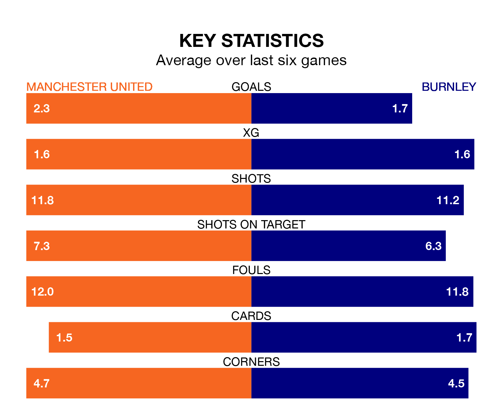

Struggling Burnley face Manchester United away at Old Trafford on Saturday looking to build on a win in their last league outing.
After securing all three points with a 4-1 victory over Sheffield United on April 20, the Clarets sit 19th in the Premier League.
They travel to play an United side sixth in the standings, who also won their last match, 4-2 against Sheffield United, on Wednesday.
In the last 10 years, United and Burnley have played each other on 16 occasions. United won 10 of them, Burnley one, and they drew five times.
On average, the Red Devils scored 1.6 goals and the Clarets 0.6 in those matches.
Their last meeting was on September 23, when United won 1-0 away.
With 37 goals in 34 games so far this season, Burnley are the league's third-lowest scorers with 1.1 goals per game. And they are conceding more than average, letting in 69 goals at a rate of 2.0 per game.
United are also below average scorers, with 1.5 goals per game, compared to a league average of 1.6. They have also conceded 1.5 goals per game.
In André Onana, the Red Devils can rely on one of the league's safest pair of hands. He has kept eight clean sheets in his 33 appearances this season in the Premier League.
In the Clarets's net, James Trafford has two clean sheets in 28 games. He has conceded a goal every 44 minutes, 60% more often than the 71 minutes between goals for Onana Onana.
The hosts are in mixed form in the Premier League, with two wins and three draws from their last six games.
And also with two wins and three draws over that period, the away team's form is identical – they have both taken nine points from 18.
Updated: 07:59 (UTC), 26/04/24